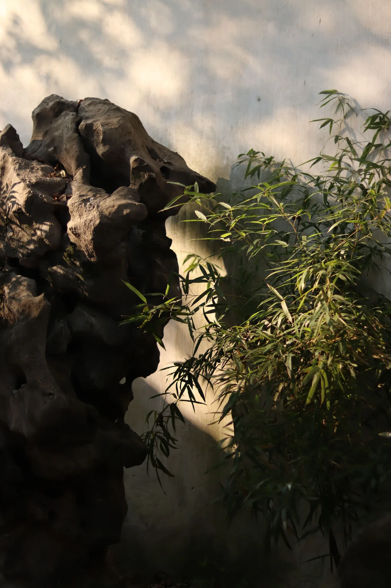
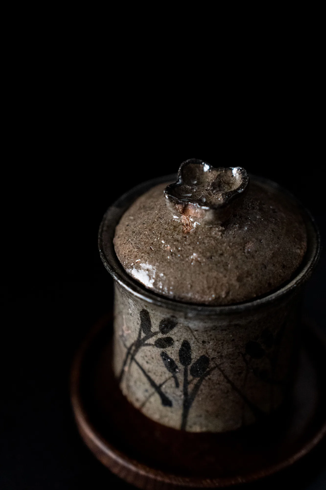
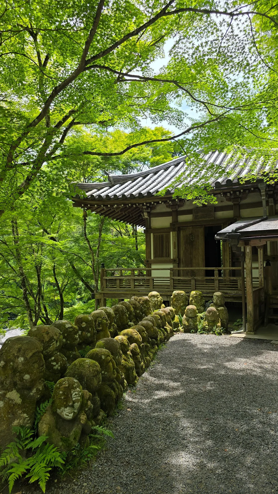

一期一會，褪去繁雜在不完美中尋覓極致的平靜本相。

傳承百年茶道儀軌，結合現代極簡美學，重新定義器物與心靈的對話。
擁抱器物上的冰裂與窯變，看見歲月留下的獨特印記。不完美，成就了無可取代的靈魂。
專注當下每一次注水與拂塵，將瞬間化為永恆的茶道體驗。相聚此刻，即是絕版。
透過嚴謹而流暢的禮儀，褪去繁雜，回歸內心的平靜本相。茶煙起，俗念散。
從選器、備水到點茶，每一個動作皆是修行。我們的工坊提供專屬的侘寂茶道體驗，讓您在都市喧囂中，尋得一處寂靜之所。
從手作器皿到庭園一隅，收藏每一份安靜而真實的日常。

